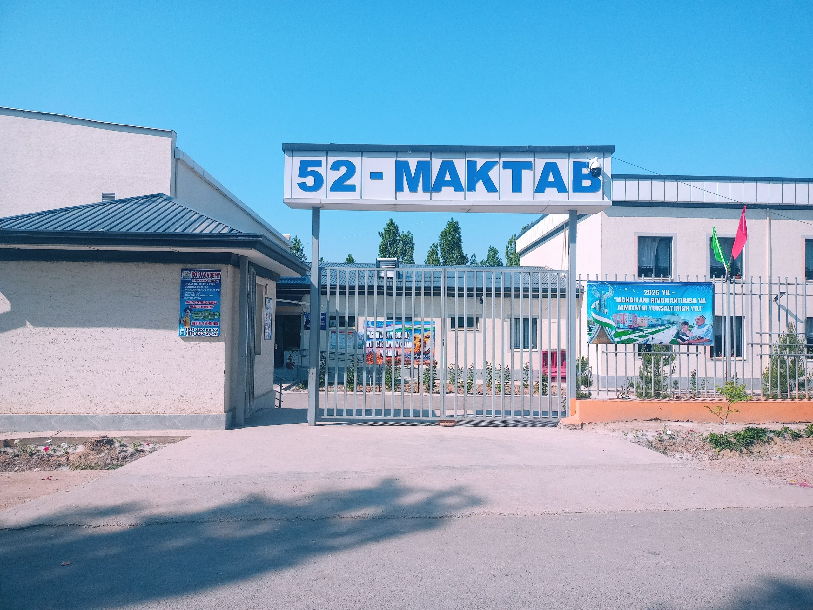
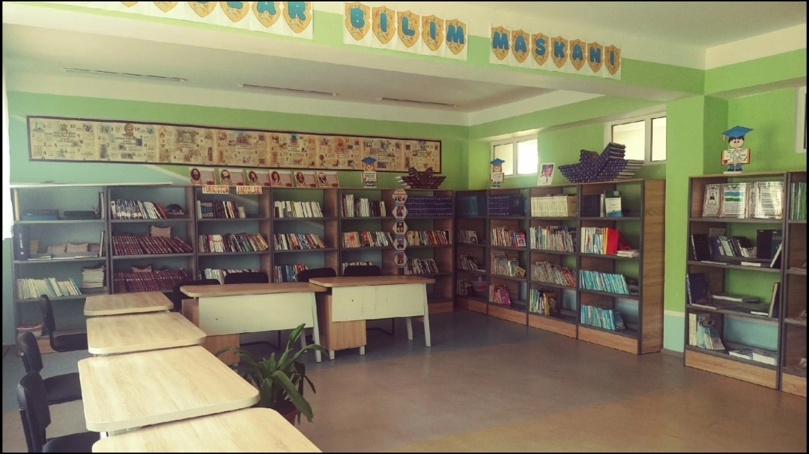

Namangan viloyati Pop tumani 52-maktab to'g'risida
MA'LUMOT
🏫 52-sonli Maktab Pasporti
Namangan viloyati, Pop tumani, Mirobod mahallasida joylashgan ushbu bilim maskani uzoq yillik tarixga ega.
📝 Direktor: Munira Saloxidinova
📅 Tashkil topgan: 1991-yil
👥 O'quvchilar: 457 nafar
🏠 Sig'imi: 360 o'rin
👩🏫 Pedagogik jamoa
37 nafar malakali mutaxassis, shundan 35 nafari oliy ma'lumotli.

Maktabimizning asosiy binosi (2023-yilgi ta'mirdan so'ng)
Maktabimizning zamonaviy sharoitlari

Direktor xonasi
Qabul va rasmiy uchrashuvlar xonasi.

Kimyo laboratoriyasi
Tajribalar o'tkazish uchun jihozlangan.

Kutubxona
Boy kitob fondi va mutolaa zali.

Sport zali
18x30 o'lchamdagi keng sport maydoni.
457
O'quvchilar
37
O'qituvchilar
31
OTMga kirish (%)